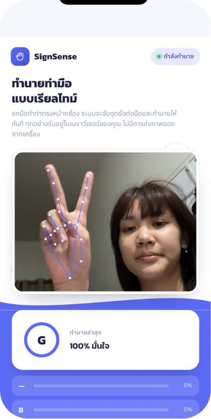

GestureTalk
Real-time Thai hand-sign recognition that runs entirely in the browser. MediaPipe tracks 21 hand landmarks per frame; a small neural network — trained separately and exported to JSON — classifies the shape into a letter. No server, no install.
JavaScript · MediaPipe Tasks Vision · Neural network · Python (KNN prototype)